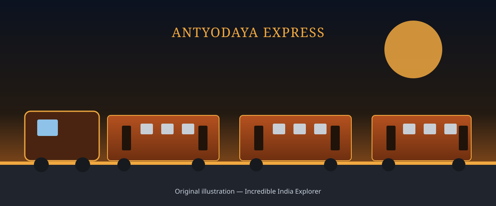

TRAINS OF INDIA
Antyodaya Express
A high-capacity, fully unreserved superfast train built to bring safe, affordable long-distance travel to India's most economically weaker passengers.
Explore Routes
About Antyodaya Express
Antyodaya Express is a category of superfast, fully unreserved passenger trains introduced by Indian Railways to serve the long-distance travel needs of economically weaker passengers. Its name draws on "Antyodaya," a term meaning the upliftment of the last and most disadvantaged person — a philosophy that has also shaped other Indian welfare schemes.
Unlike ordinary general coaches attached to mail and express trains, Antyodaya Express rakes are made up entirely of high-capacity unreserved coaches, purpose-built to carry more passengers safely and comfortably on busy long-distance corridors, without requiring a reservation.
History & Development
From a 2016 budget announcement to a growing network of unreserved superfast trains.
Train Design
Purpose-built for high-capacity, fully unreserved travel.
Routes & Destinations
Notable Antyodaya Express services connecting major migrant-labour and pilgrimage corridors.
Passenger Facilities
Amenities on board an Antyodaya Express high-capacity unreserved coach.
Railway Significance
Antyodaya Express addresses a specific and long-standing gap in India's rail network: safe, high-capacity, superfast travel for passengers who cannot afford — or do not need — a reserved berth. On many of India's busiest corridors, ordinary unreserved coaches on general mail and express trains are severely overcrowded; Antyodaya rakes, made up entirely of high-capacity unreserved coaches, relieve that pressure while still offering superfast running and modern safety features.
By concentrating on routes that connect major source regions for migrant labour — such as Bihar, Jharkhand and eastern Uttar Pradesh — with large employment hubs, the service directly serves some of the country's most travel-dependent and price-sensitive passengers, embodying its namesake philosophy of prioritising the least advantaged traveller.